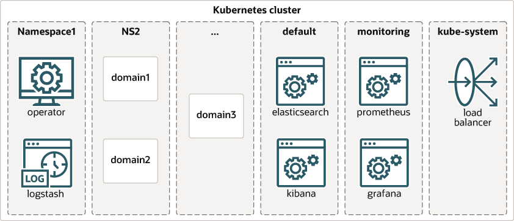
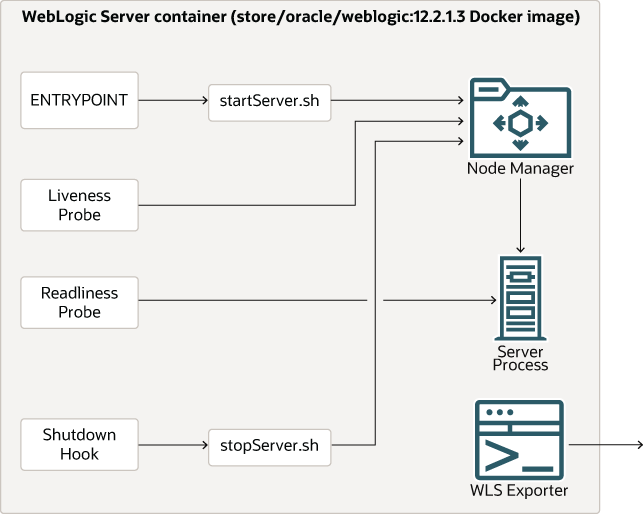

アーキテクチャ
オペレータは次の部分で構成されています:
- オペレータ・ランタイムは、Kubernetesポッドにデプロイされたコンテナで実行され、実際の管理タスクを実行するプロセスです。
- Kubernetesクラスタにインストールされている場合に、WebLogicドメインの操作の詳細およびステータスを表すこの新しいタイプのインスタンスをKubernetes APIサーバーで管理できるKubernetesカスタム・リソース定義(CRD)のモデル。
- オペレータ・ランタイムおよび関連リソースをインストールするためのHelmチャート。
- Kubernetesで実行するWebLogicドメインを準備またはパッケージ化するための様々なサンプル・シェル・スクリプト。
- Kubernetesクラスタの外部にWebLogicエンドポイントを条件付きで公開するための様々なサンプルHelmチャートまたはシェル・スクリプト。
オペレータは、次のdocker pullコマンドを使用してアクセスできる「コンテナ・イメージ」にパッケージ化されています:
$ docker pull ghcr.io/oracle/weblogic-kubernetes-operator:3.1.3
オペレータ・イメージの取得およびオペレータをインストールするための前提条件の詳細は、「クイック・スタート・ガイド」を参照してください。
オペレータは、domain.weblogic.oracle (短縮名domain、複数形domains)と呼ばれるKubernetesカスタム・リソース定義を登録します。 このCRDで定義されているドメイン・タイプの詳細(スキーマを含む)は、「こちら」で入手できます。
次の図は、WebLogicドメインおよびオペレータをホストしているKubernetesクラスタ内の高レベル・コンポーネント(オプション・コンポーネントを含む)の一般的なレイアウトを示しています:

Kubernetesクラスタには、複数のネームスペースがあります。 コンポーネントは、次のようにネームスペースにデプロイできます:
- オペレータは、独自のネームスペースにデプロイされます。 Elastic Stack統合オプションが構成されている場合、Logstashポッドもオペレータのネームスペースにデプロイされます。
- WebLogicドメインは、様々なネームスペースにデプロイされます。 必要に応じて、ネームスペースに複数のドメインを含めることができます。 オペレータが管理できるドメインまたはネームスペースの数に制限はありません。 Kubernetesクラスタには複数のオペレータが存在する可能性がありますが、各オペレータは、それが担当する特定のネームスペースのリストを使用して構成されます。 オペレータは、オペレータが管理するように構成されているどのネームスペースにもないドメインに対してアクションを実行しません。
- ロード・バランサの構成は、通常、ドメインと同じネームスペース、または
kube-systemネームスペースなどのシステムの共有ネームスペースで行います。 - ElasticsearchおよびKibanaのデプロイメントは、通常は
defaultネームスペースにデプロイされます。
ドメイン・アーキテクチャ
次の図は、WebLogicドメインのさまざまな部分がオペレータによってKubernetesでどのようにマニフェストされるかを示しています。

この図は、次の詳細を示しています:
- オプションの永続ボリュームは、使用可能なプロバイダのいずれかを使用して顧客が作成します。 永続ボリュームがドメインまたはクラスタのメンバー間で共有されている場合、選択したプロバイダは「読取り/書込み(複数)」アクセス・モードをサポートしている必要があります。 永続ボリュームの共有状態には、
domainディレクトリ、applicationsディレクトリ、ログを格納するディレクトリ、およびファイルベースの永続ストアのディレクトリが含まれます。 - WebLogic Server管理サーバーのポッドが作成されます。 このポッドには、
weblogic.domainUID、weblogic.serverNameおよびweblogic.domainNameのラベルが付いています。 1つのコンテナがこのポッドで実行されます。 WebLogicノード・マネージャおよび管理サーバー・プロセスは、このコンテナ内で実行されます。 ノード・マネージャ・プロセスは、リブネス・プローブの内部実装の詳細、パッチ適用、および管理コンソールへのモニタリング機能と制御機能を提供するために使用されます。 他の目的には使用されず、将来のリリースで削除される可能性があります。 ClusterIPタイプのサービスが管理サーバーポッド用に作成されます。 このサービスは、管理サーバーに安定した既知のネットワーク(DNS)名を提供します。 この名前は、domainUIDおよび管理サーバー名から導出され、ポッドを起動する前に認識されます。 管理サーバーListenAddressは、この既知の名前に設定されます。ClusterIPタイプのサービスは、Kubernetesクラスタ内でのみ表示されます。 これらは、ドメイン内のすべてのサーバーが相互に通信するために使用する既知の名前を指定するために使用されます。 このサービスには、weblogic.domainUIDおよびweblogic.domainNameのラベルが付いています。NodePortタイプのサービスは、オプションで管理サーバーポッド用に作成されます。 このサービスは、Kubernetesクラスタ外のクライアントに管理サーバーへのHTTPアクセスを提供します。 このサービスは、WLST接続のためにWebLogic Server管理コンソールまたはT3プロトコルにアクセスするために使用されます。 このサービスには、weblogic.domainUIDおよびweblogic.domainNameのラベルが付いています。- ポッドは、WebLogic Server管理対象サーバーごとに作成されます。 これらのポッドには、
weblogic.domainUID、weblogic.serverNameおよびweblogic.domainNameのラベルが付いています。 各ポッドで1つのコンテナが実行されます。 WebLogicノード・マネージャおよび管理対象サーバーのプロセスは、これらの各コンテナ内で実行されます。 ノード・マネージャ・プロセスは、リブネス・プローブの内部実装の詳細として使用されます。 他の目的には使用されず、将来のリリースで削除される可能性があります。 ClusterIPタイプのサービスは、WebLogicクラスタの一部ではない管理対象サーバーを含む管理対象サーバーのポッドごとに作成されます。 これらのサービスは、管理対象サーバーで実行されているアプリケーションにアクセスするために使用されます。 これらのサービスには、weblogic.domainUIDおよびweblogic.domainNameのラベルが付いています。 これらのエンドポイントをKubernetesクラスタの外部に公開するには、ロード・バランサまたはNodePortタイプのサービスを使用してこれらのサービスを公開する必要があります。- イングレスは、必要に応じて、WebLogicクラスタごとに顧客が作成できます。 イングレスは、そのWebLogicクラスタ内のすべての管理対象サーバーへのロード・バランシングされたHTTPアクセスを提供します。 ロード・バランサは、WebLogicクラスタ内の管理対象サーバーが準備完了になるか、リクエストを処理できなくなるたびに、イングレスのルーティング表を更新します。これにより、イングレスは常にユーザー・リクエストを処理できる管理対象サーバーのみを指します。
Kubernetesでは、一部のリソース・タイプの名前が、「DNSラベル名」およびRFC 1123で定義されているDNSラベル標準に準拠している必要があります。 したがって、このオペレータは、Kubernetesリソースの名前がKubernetesの制限を超えないように強制します(「Kubernetesリソース名の制限を満たす」を参照)。
次の図は、WebLogic Serverインスタンスを実行するコンテナ内のコンポーネントを示しています:

ドメインはコンテナ・イメージを指定し、デフォルトはcontainer-registry.oracle.com/middleware/weblogic:12.2.1.4です。 WebLogic Serverを実行しているすべてのコンテナは、この同じイメージを使用します。 ユースケースに応じて、このイメージにはWebLogic Server製品バイナリを含めることも、ドメイン・ディレクトリを含めることもできます。
ドメインのimageフィールドの変更によって発生したローリング・イベント中に、コンテナはimageフィールドの更新された値とその前の値を組み合せて使用します。
ENTRYPOINTは、ノード・マネージャ・プロセスを起動するスクリプトによって構成され、WLSTを使用してノード・マネージャによるサーバーの起動をリクエストします。 サーバーが応答しない場合でもサーバーへのソケット接続を使用してサーバー・ステータスを取得できるように、ノード・マネージャを使用してサーバーを起動します。 これは、リブネス・プローブで使用されます。- リブネス・プローブは、ノード・マネージャ・プロセスを問い合せて、サーバーが稼働していることを確認するように構成されます。 リブネス・プローブは、デフォルトで45秒ごとにリブネスをチェックし、5秒後にタイムアウトするように構成されています。 ポッドがリブネス・プローブに失敗すると、Kubernetesはそのコンテナを再起動します。
- レディネス・プローブは、WebLogic Server ReadyAppフレームワークを使用するように構成されます。 レディネス・プローブは、サーバーがユーザー・リクエストを受け入れる準備ができているかどうかを判断するために使用されます。 レディネスは、ロード・バランサのエンドポイントにサーバーを含めるタイミング、ローリング再起動の場合に再起動されたサーバーを完全に起動するタイミング、およびその他の様々な目的を決定するために使用されます。
- サーバーの正常なシャットダウンを実行するスクリプトを実行するシャットダウン・フックが構成されます。 これにより、サーバーを強制終了する前に正常に停止できます。
コンテナ・イメージの外部に格納されたドメイン状態
オペレータは、ドメインの実行に使用されるイメージの外部にすべての状態を格納する必要があります。 これは、永続ファイル・システムまたはデータベースのいずれかに存在することを意味します。 WebLogic構成、つまりドメイン・ディレクトリとアプリケーション・ディレクトリは、イメージまたは永続ボリュームから取得されます。 ただし、ファイルベースの永続ストアなどの他の状態は、永続ボリュームまたはデータベースに格納する必要があります。 WebLogicドメインに参加しているすべてのコンテナは、同じイメージを使用し、起動時にそれらが実行するサーバーであるパーソナリティを使用します。 各ポッドは、ドメインに従ってストレージをマウントし、ドメイン内でのロールを果たすために必要な状態情報にアクセスできます。
このアプローチが採用された理由に関するバックグラウンド情報を提供するだけでなく、この分離がコンテナに関連する場合に他の既存のオペレータ(他の製品の場合)およびKubernetesの「牛」の哲学と一貫性があるという事実に加えて、いくつかの情報を提供する価値があります。
外部状態アプローチを使用すると、オペレータはイメージを本質的に不変の読取り専用バイナリ・イメージとして処理できます。 つまり、イメージを1回だけプルする必要があり、多くのドメインで同じイメージを共有できます。 これにより、WebLogic Serverイメージに必要な帯域幅とストレージの量を最小限に抑えることができます。
また、このアプローチでは、保持する必要があるすべての状態が永続ボリュームまたはデータベース・バックエンドに書き込まれるため、実行中のコンテナで作成された状態を管理する必要がなくなります。 コンテナとポッドは完全に貫通しており、必要に応じて新しいコンテナとポッドに交換できます。 これにより、実行中のコンテナ内に状態を保持する必要がなくなるため、障害の処理とローリング再起動が非常に簡単になります。
ユーザーがバイナリ・パッチをWebLogic Serverに適用する場合は、単一の新しいパッチ適用済イメージのみを作成する必要があります。 必要に応じて、実行中のドメインをローリング再起動でこの新しいパッチ適用済イメージに更新できます。これは、コンテナに状態がないためです。
オペレータの将来のリリースでは、Kubernetesフェデレーション、高可用性、障害時リカバリなどのシナリオをサポートするために、ドメインを「移動」または「コピー」できることが望ましいと考えられます。 状態を実行中のコンテナから分離することは、この機能を大幅に簡略化し、構成は通常、WebLogic Serverイメージのサイズよりはるかに小さいためにネットワーク上で移動する必要があるデータの量を最小限に抑える方法として見られます。
オペレータを開発しているチームは、これらの考慮事項が外部状態アプローチを採用するための十分な正当性を提供したと感じました。
ネットワーク名の予測可能性
オペレータはサービスを使用して、各サーバーに安定した既知のDNS名を提供します。 これらの名前は、サーバーを実行するポッドを起動する前に認識され、サーバーが常に相互に検索できるようにWebLogic Server構成のListenAddressフィールドで使用されます。 これにより、ポッド名または実際のWebLogic Serverインスタンス名をDNSアドレスと同じにする必要もなくなります。